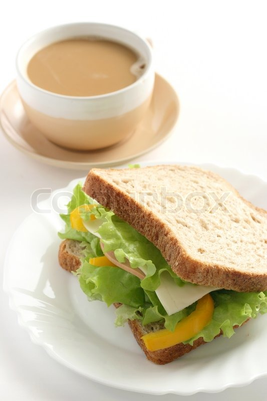

Breakfast

Description
My easy go-to breakfast.
You will hopefully find all the ingredients in your kitchen.
Ingredients
- Coffee grounds
- Water
- Milk or cream
- Butter
- Bread
- Ham
- Cheese
Steps
- Put your coffee grounds and water into your coffee maker and switch it on
- Get your milk or cream on the table, as well as the topping for your sandwich
- Butter your bread and place the toppings
- Pour your coffee into your mug and add milk or cream to your liking
- Sip on your coffee until you're late from work